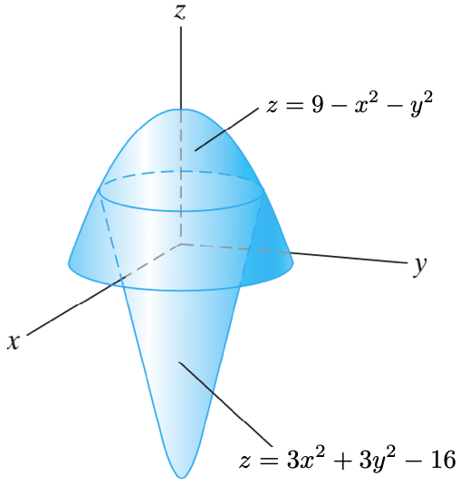

Exame de Métodos Matemáticos III
Curso 2018-2019, 21/5/2019
Calcula o volume da cápsula delimitada polos paraboloides \({z=9-x^2-y^2}\) e \({z=3x^2+3y^2-16}\), ver figura.
{kind=link}
Como a figura ten simetría de revolución arredor do eixo \(z\) o xeito máis sinxelo de facer esa integral é considerar coordenadas cilíndricas,
\[
x=r \cos \theta, y=r \sin \theta, z=z.
\]
Nese sistema o elemento de volume é \({\rm d}V = r {\rm d}r{\rm d}\theta{\rm d}z\). Os límites de integración en \(z\) e \(\theta\) están dados por
\[
3r^2-16 \leq z \leq 9-r^2,\text{ e}, 0 \leq \theta \leq 2\pi.
\]
O límite superior en \(r\) está dado pola solución positiva da ecuación
\[
9-r^2=3r^2-16 \Rightarrow 4r^2=25 \Rightarrow r = \frac{5}{2},
\]
polo que \(0 \leq r \leq 5/2\).
O volume da cápsula é
\[
\int_0^{\frac{5}{2}}\int_0^{2\pi}\int_{3r^2-16}^{9-r^2} r{\rm d}z{\rm d}\theta{\rm d}r =
\int_0^{\frac{5}{2}}\int_0^{2\pi} r \left. z \right]_{3r^2-16}^{9-r^2} {\rm d}\theta{\rm d}r =
\int_0^{\frac{5}{2}}\int_0^{2\pi} r (25-4r^2) {\rm d}\theta{\rm d}r =
\]
\[
\int_0^{\frac{5}{2}} r (25-4r^2) \left. \theta \right]_0^{2\pi} {\rm d}r =
\int_0^{\frac{5}{2}} 2\pi r (25-4r^2) {\rm d}r
= \left. -\frac{\pi}{8} (25-4r^2)^2 \right]_0^{\frac{5}{2}} = -\frac{\pi}{8} (0-25^2) = \pi \frac{625}{8}.
\]